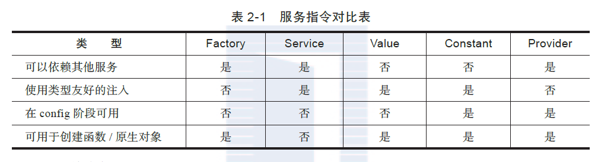
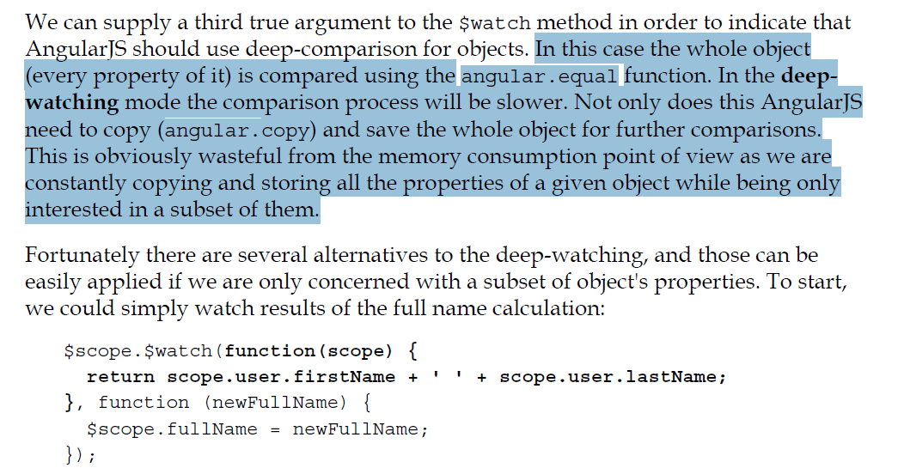

I belong to : Reading
对于组件型指令来说，标准的用法是E，但是为了兼容IE8，通 常也支持一个A，因为IE8 的自定义元素需要先用document.createElement 注册，用A 可 以省去注册的麻烦。对于组件型指令，更重要的是内容信息的展示，所以我们一般不涉及指令的link 函数，而应该尽量地将业务逻辑放置在Controller 中。
由于多个装饰器很可能被用于同一个指令，包括独立作用域指令，所以装饰
器型指令通常不使用新作用域或独立作用域。如果要访问绑定属性，该怎么做呢？仍然看
前面的例子
<user-details name="test" details="details" on-update="updateIt(times)"></userdetails>，
假如不使用独立作用域，我们该如何获取这些属性的值呢？
1 、对于 @ 型的绑定，我们可以直接通过 attrs 取到它：attrs.name 等价于 name: '@'。
2、 对于 = 型的绑定，我们可以通过 scope.$eval 取到它：scope.$eval(attrs.details) 等价

过滤器还可以接收第二个参数，乃至第N个参数，如：return function(input, arg1, arg2, arg3){...};,而使用者则通过
{{1|myFilter:2:3:4}}的形式调用它。这种情况下，arg1 的值为2，arg2的值为3，arg3 的值为4。
除了Constant 外，所有这些类型的服务，背后都是通过Provider 实现的，我们可以把它们看做让Provider 更容易写的语法糖。
Angular 提供了这么多种形式的服务，那么我们在工程实践中该如何选择？我们可以遵 循下列决策流程：
● 需要全局的可配置参数？用 Provider。
● 是纯数据，没有行为？用 Value。
● 只 new 一次，不用参数？用 Service。
● 拿到类，我自己 new 出实例？用 Factory。
● 拿到函数，我自己调用？用 Factory。
但是，还有另一种更加敏捷的方式： ●是纯数据时，先用 Value ；当发现需要添加行为时，改写为 Service ；或当发现需 要通过计算给出结果时，改写为Factory ；当发现需要进行全局配置时，改写为Provider。
● 最酷的是，这个过程对于使用者是透明的—它不需要因为实现代码的改动而更改 原有代码。如上面Value 和Factory 的使用代码，仅仅从使用代码中我们区分不出 它是Value 还是Factory。
接下来，我们来看Constant。与其他Service 不同，Constant 不是Provider 函数的语法 糖。更重要的差别是，它的初始化时机非常早，可以在angular.module('com.ngnice.app'). config 函数中使用，而其他的服务是不能被注入到config 函数中的。这也意味着，如果你 需要在config 中使用一个全局配置项，那么它就只能声明为常量，而不能声明为变量。 在官方的开发指南中，给出了一个完整的对比表，见表2-1。
由于 Factory 可以根据程序逻辑返回不同的数据类型，所以我们无法推断其结果是什么类型，也就是对类型不够友好。Provider 由于其灵活性比Factory 更高，因此在类型友好性上和 Factory 是一样的。
● 在 config 阶段可用：只有 Constant 和 Provider 类型在 config 阶段可用，其他都是 Provider 实例化之后的结果，所以只有config 阶段完成后才可用。由于Service 是new 出来的，所以其结果必然是类实例， 也就无法直接返回一个可供调用的函数或数字等原生对象。 如果你确实需要对一个没有提供Provider 的第三方服务进行配置，该怎么办呢？ Angular 提供了另一种机制：decorator。


<img src='./17-angualr/4.png'/>http://sroze.github.io/ngInfiniteScroll/index.html
get可以用来取本地文件，其他不可以
代码里很多和界面无交互的函数和变量都挂在$scope上面
$scope是数据展示和各种事件的载体。与展示、交互行为无关的数据和方法最好不要挂载到$scope上，保持$scope的纯粹。 参考链接
避免深度watch， 即第三个参数为true. 参考《mastering web application development with angularjs》 P313
及时移除不必要的$watch
var watchFn = $scope.$watch('cycle', changeCycle);
watchFn();//移除watch减少watch的变量长度，例如对双向绑定的变量用标签例如<span>包起来

ng-repeat使用 track by
刷新数据时，我们常这么做：$scope.tasks = data || [];，这会导致angular移除掉所有的DOM，重新创建和渲染。
若优化为ng-repeat="task in tasks track by task.id后，angular就能复用task对应的原DOM进行更新，减少不必要渲染。
列表对象的数据转换，在放入scope之前处理
如$scope.dataList = convert(dataFromServer)